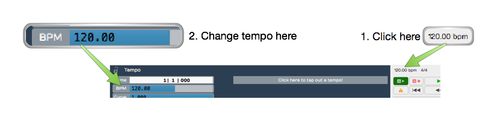
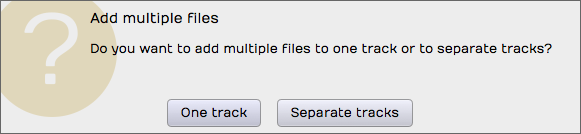
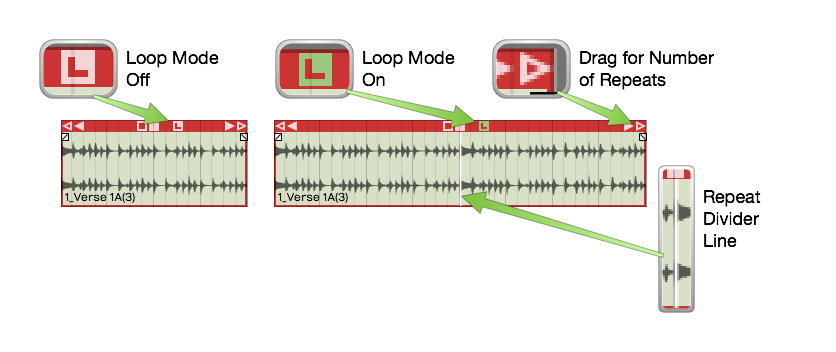
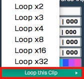
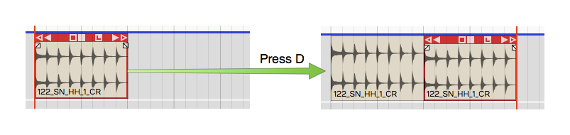
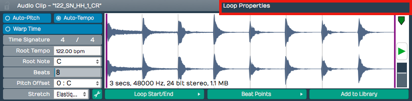

Working With Loops¶
In this chapter we introduce the looping capabilities of Waveform. You can drag in files from your loop library as Audio clips, repeat them with the Duplicate (D) action, or switch any Audio clip into looping mode and roll out repetitions over as many bars as you want. This makes it easy, for example, to extend a short loop into a beat to play over the full length of a song. An audio clip's loop settings appear in the Actions panel and in the Detail editor (Clip tab), which we will explore in this chapter as well.
Getting Loops Into Waveform¶
There are four ways to copy loops into an Edit.
- Use the Browser Files tab and navigate to wherever you have audio files and loops on your system. Drag loops you find there to tracks in the Edit. As you drag in loops they appear as an outline until you drop them.
- Use the Browser Search tab and search for loops and then drag them into your Edit. The Browser also gives you the ability to preview loops to help you select the right one for the song.
- Simply drag them from you computer desktop drop them onto tracks .
- From the menu section, select Import > Import an audio or MIDI file. Navigate to a file on your system and click open. The Select a file to import dialog box even includes a basic file audition function with Auto-play.
📝 Note: Beyond the common formats — WAV, AIFF, FLAC, Ogg, and MP3 — Waveform also imports
.w64,.caf,.au, and.vocfiles. On macOS it additionally reads Apple-format files such as.m4aand.m4b; on Windows it reads Windows Media Audio. REX loop files (.rx2,.rcy,.rex) are supported in builds that include the REX option.
Setting the Edit Tempo¶
If you know the tempo of the loop, you might want to set the tempo of your Edit to that tempo before dragging the loop in. That will give you the most natural results.

Changing the Tempo
Here is how to change the tempo:
- Click on the BPM setting in the transport bar. The Actions panel will show the BPM value.
- Click on the BPM value and type in the new tempo.
Dragging Loops to a Track¶
As you drag a file to to a track, you'll see an outline of the Audio clip before you drop it. Position the beginning of the clip right where you want it on the track, then just drop it.If it's not in the right place, grab the Audio clip from the header and drag it into place.
After dropping a loop, notice that the cursor jumps to the end of the loop. This is to position the cursor to drop in the next one, as you build up a track.
💡 Tip: If you don't like having the cursor jump to the end when dropping in loops, hold down Opt / Alt as you drag. This prevents the cursor from jumping to the end.
If Snap is on, loops you drag in will snap to the grid.
Dragging in Multiple Clips from the Browser¶
To drag in several clips at once, make a multiple selection in the Browser and drag the selected loops to a track. They will be arranged on the track end-to-end.
💡 Tip: To drop a selection of clips to parallel tracks, hold down Cmd / Ctrl as you drag and Waveform asks if you want to put them on one track or separate tracks. This is great when working with multitrack drum loops. It even creates additional tracks if there aren't enough available.

Dragging Loops to Separate Tracks
Looping the Loop¶
Audio clips have an L icon on the header. Click the L to toggle looping mode for that clip. Once the clip is in looping mode it will immediately appear to be twice as long. Enabling looping gives you one repeat right away.

Audio Clip Loop Mode
To repeat the clip, drag the right trim handle and roll out as many repeats as you want. You will see a white repeat divider at the start of each repetition. The underlying audio wave file is not duplicated, it is just being replayed over and over. All other editing operations work the same as any other loop.
To stop looping, click the L icon gain to toggle looping off. That returns the clip to a single cycle.
There is another way to activate clip looping. Select the clip then click Loop this Clip in properties. From there you can select the number of times to loop. This is an alternative to dragging the right trim handle to roll out repetitions.

Loop this Clip in properties
The nice thing about looping is it doesn't take up any additional space in the project. You can loop just about any clip. You could take a four bar drum loop and separate out one or two bars of the main groove then loop it. That can give you the starting point for a song. Roll it out across the entire song, and you've got something more inspiring than a simple click track to play against.
Duplicating Clips¶
Another way to repeat a clip is to duplicate it. To do so, select a clip and press D. Duplicate is the equivalent of copy followed by paste. The duplicate clip is placed immediately after the selected clip.

Duplicating a Clip
This is the best approach if you plan to edit the audio in a unique way for that section of the song.
Loop properties¶
When you select an Audio clip, its loop properties appear in the Actions panel (and in the Detail editor, Clip tab). These properties are related to the underlying wave file. Tweaks to these properties affect how the Audio clip will respond to tempo, pitch, and time stretching. Here is a description of the most essential loop properties:

Loop properties in the Actions panel
Auto-Pitch - With Auto-Pitch enabled, Waveform will change the pitch of the clip appropriately to match key change events in the Tempo track. This only works if you have a Root Note set for the file; more on that in a moment.
Auto-Tempo - With Auto-Tempo ticked, the Audio clip will be automatically stretched to match the song tempo and tempo changes in the Tempo track. For Auto-Tempo to work, you need to make sure you have the Root Tempo set for the file and Stretch set to an appropriate algorithm.
Warp Time - With Warp Time enabled the waveform view to the right becomes a Warp Time editor. You can add warp points and do fine timing adjustments. This powerful feature is covered in detail in Warp Time.
Time Signature - Edit Time Signature values to set the time signature of the file.
Root Tempo - Root Tempo is the original tempo of the loop file. Waveform uses this to know how much to stretch the file to sync it to the Edit tempo. If Root Tempo is not recorded along with the loop file, you can set it here. Files created within Waveform will automatically have the Root Tempo set to match the Edit tempo.
Beats - The Beats parameter is the number of beats in the file. Using Beats and Root Tempo Waveform calculates the length of the loop file in musical terms.
Pitch Offset - If you just want to pitch the file up or down, enter an offset value for Pitch Offset.
Stretch - Stretch sets time stretching algorithm used for this loop file. Usually you will want to use Elastique (Monophonic) for lead vocals and solo instruments. Use Elastique Pro for everything else. Melodyne is typical selected used for pitch correction.
Waveform View - The waveform view, found in the Detail editor (Clip tab), lets you play the file. You can also adjust the in and out loop points by dragging the purple lines inward. There is a convenient level control here as well. This view is replaced by the zoomable Warp Time editor when Warp Time is enabled.
Loop Start/End - This button contains a few quick tools to set the start and end loop points of the underlying wave files to match the current Audio clip start and end points.
Beat Points - Beat Points are a type of marker that shows where the transients are to assist with time stretching. This concept is very similar to how acidized files work. With the latest Elastique Pro stretching algorithms manually manipulating the beat points is not necessary.
Add to Library - If you create an Audio clip loop and might want to reuse it in other projects, click Add to Library then give it a name and tags.
📝 Note: When you use Add to Library, the loop file will be saved to the User Loops Path folder as designated on the Loop Database page of the Settings tab.
💡 Tip: If you want more control when adding loops to your library, try Export > Render to a File. If you choose, Only Render Selected Clips you get much more control over its properties and where to put the resulting file.
Moving On¶
There's a lot more you can do with clip looping, loop files, and loop libraries in Waveform, but those are the fundamentals.